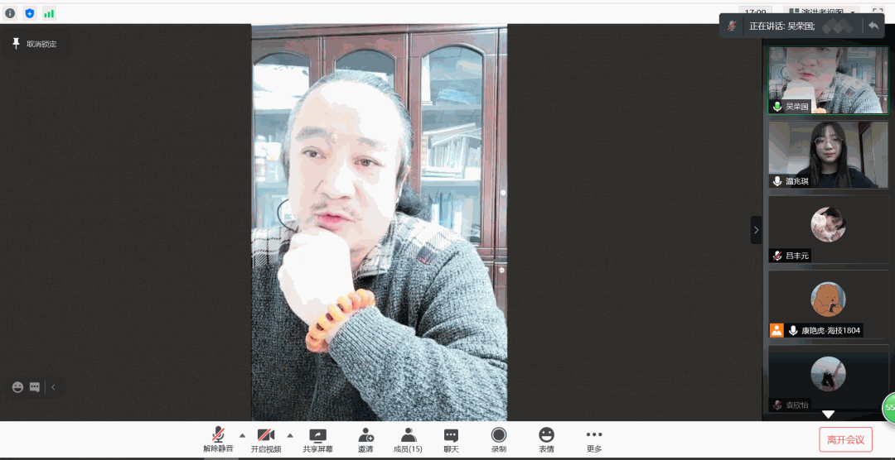
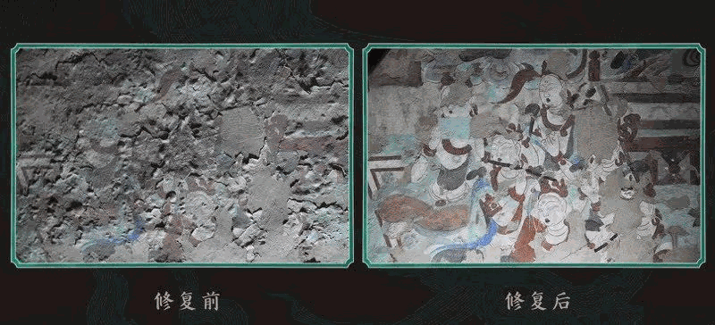
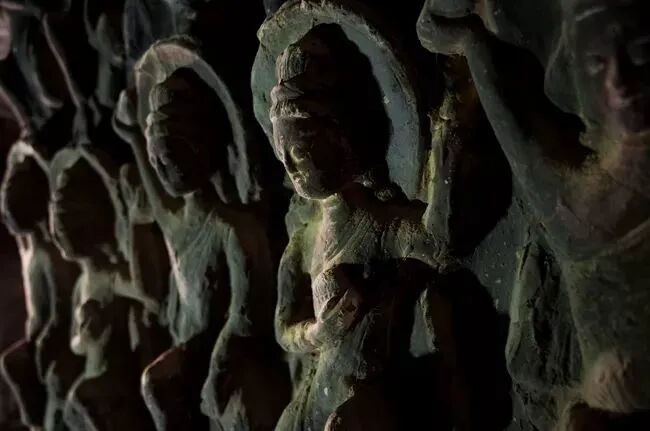
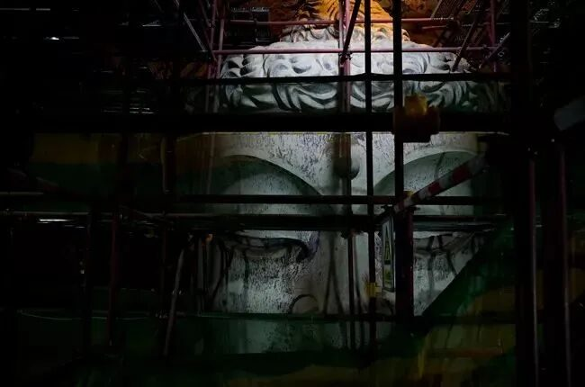

【行者无疆 聆谂丝韵】千年一觉，大梦敦煌
千年一觉，大梦敦煌
在莫高窟外的流沙里，在三危山上的佛光中，在月牙泉的碧波间，敦煌的千年文化传承不断，历代文物保护工作者一生的身影置身其间，历久弥新，而无消弭。
2021年1月29日，行者无疆社会实践团与敦煌博物馆的吴荣国老师在线上相聚，吴老师就行者们所关心的问题展开解答。

背起文物走世界
赤子之心守敦煌
—— 敦煌博物馆策展人吴荣国
策展人是指在艺术展览活动中担任构思、组织、管理的专业人员。近年来，我国博物馆展览机制进入“策展人时代”，一位优秀的策展人能够真正“让文物活起来”，做到“讲好中国故事”。敦煌博物馆的吴荣国老师就是这样一位优秀策展人。
吴荣国老师自幼在莫高窟学习绘画，这段经历为他日后的工作奠定了坚实的基础。吴老师到岗第一天，作为一名新人他就接手了文物复制工作，后来逐渐承担起文物修复、文物普查、文物绘图拍照、陈列布展等工作，与敦煌博物馆相守至今。

吴荣国老师作为一名策展人，“背着文物走世界”，他带着敦煌博物馆馆藏的珍品展开异地展览，奔波于各大城市，只为将两千年前的敦煌盛世讲述给更多人听。异地展览工作中文物押运是重中之重，为了做到万无一失，吴老师在途中几乎做到寸步不离文物，确保所有文物在目光所及之处；为了不让文物在展览过程中受到损伤，吴老师每到一处展览地，都会严格检查展柜密封程度、调整展馆温湿度，做到宣传保护两不误。
让文物活起来
让文物活下去
——文物展览要兼顾保护与利用
珍贵历史文物“不仅属于我们，也属于后代子孙”。对于事关全局利益与长远发展的文物保护，切不能只算经济账、眼前账、局部账，任何个人和单位都不能为了谋取眼前或局部利益而破坏全社会和后代的利益。正如习近平同志当年批示所要求的，“必须认真妥善地加以保护”。

在采访过程中，吴老师为行者们介绍了他作为策展人保护敦煌文物的举措。在文物运送途中，他坚持做到人不离车，一路看护着文物；他昼夜不歇，五天的路途他只休息了半个小时；他甚至对运送车辆之间的距离都提出要求，只为保证所有的文物都能平安抵达目的地……一言一行，皆是对文博的赤子心肠。
除此之外，吴老师还向大家介绍了为保障文物异地展览安全性而采取的措施。吴老师提到，他每到一处展馆，都会观察展馆的密封性，对馆内的温度与湿度提出要求，根据展馆设施调整展出计划，力求对文物的损伤达到最小。文物就这样在精心呵护之下走遍祖国大江南北，让敦煌的千年古韵传到每位中华儿女的耳边。
敦煌文化，中国气象
习近平总书记在2019年视察莫高窟的讲话中深刻指出：敦煌文化是各种文明长期交流融汇的结晶。自汉代以来，多元一体的敦煌文化始终传承着中华传统文化的精华，同时闪耀着古代印度文明、波斯文明、希腊文明的璀璨光芒，成为举世瞩目、特色鲜明的地域文化。


习近平总书记多次强调，文化自信是更基础、更广泛、更深厚的自信，是更基本、更深沉、更持久的力量。保护文物是历史赋予我们的文化使命，锻造文化自信是时代赋予我们的神圣职责。行者无疆实践团，愿为中华文化的传承与发扬贡献自己的微薄之力！
玉门关戈壁上静默的孤烟冷月，
曾见过无数金戈铁马的激情热血；
悬泉置流沙下沉睡的吉金断简，
记录下庞大帝国庸常中的点滴奇迹。
敦煌见证了历史的风尘，
我们见证了历史的敦煌。
来源 | 行者无疆实践团
文字 | 苏亚男
排版 | 吕丰元
审核 | 康艳虎 张清雅 胡至鸿
行者无疆实践团
QQ：2758025831

随行者一起认识世界
长按二维码